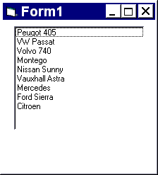

The objective of this tutorial is to learn the distinctive features of list boxes and combo boxes and to be able to use each of these within a VB program. At the end of this tutorial you should be able to:
Create each of these control types from the toolbox and arrange them on a form.
Create selection lists at design time.
Add/remove an item to a list box or combo box at run time.
Provide simple code to make the controls respond to a click or double click event.
Create a simple application combining features learnt in previous tutorials and save it in executable format.
List boxes and combo boxes are used to supply a list of options to the user. The toolbox icons representing these two controls are for list box and for combo box.
A list box is used when the user is to be presented with a fixed set of selections (i.e. a choice must be made only from the items displayed, there is no possibility of the user typing in an alternative).
Examples might be offering a list of the days in a week, the available modules in an elective catalogue, the holiday destinations available from a particular airport or the types of treatment offered by a beauty salon.
To create a list box, double click on the toolbox icon . Drag the resulting box into place on the form and size it according to the data it will hold. The left hand picture below shows a list box that has been created and sized on Form1. In the middle is the code that is required to load a selection of cars into the list. The data has been included in the procedure Sub Form_Load so that it appears when Form1 is loaded. Finally, the picture on the right shows what appears on the form when the application is run. Notice that vertical scroll bars are added automatically if the list box is not deep enough to display all the choices.
Private Sub Form_Load ()
lstCars.AddItem "Peugot 405"
lstCars.AddItem "VW Passat"
lstCars.AddItem "Volvo 740"
lstCars.AddItem "Montego"
lstCars.AddItem "Nissan Sunny"
lstCars.AddItem "Vauxhall Astra"
lstCars.AddItem "Mercedes"
lstCars.AddItem "Ford Sierra"
lstCars.AddItem "Citroen"
End Sub

In the example above, note that the items in the list box appeared in the order that they were typed in. By setting the list box property sorted to true (instead of false) at design time, the cars would appear in alphabetical order (Citroen first).
Items may be added to or removed from a list at run time.
lstCars.AddItem "BMW 520i"
Adds that item into a list (if sorted is set, BMW 520i will be added in alphabetical order), otherwise it will be appended to the bottom of the list.
lstCars.AddItem "BMW 520i", 0
The list items are numbered 0, 1, 2, etc. This statement will insert the item BMW 520i at the top of the list. Beware of using this mechanism with sorted set to true, the results can be unpredictable.
lstCars.RemoveItem 0
The remove statement requires an index. The list items are numbered 0, 1, 2, etc. This statement would remove the first item in the list.
Note: The property ListCount stores the number of items in a list, so lstCars.ListCount can be used to determine the number of items in list box lstCars.
The property ListIndex gives the index of the currently selected list item. So the statement lstCars.RemoveItem lstCars.ListIndex removes the currently highlighted list item.
Adding an item can be accomplished very neatly using an input dialog box. Try this:
lstCars.AddItem InputBox("Enter a car", "add a car")
Try creating the list box we have been discussing. Explore how it works at run time with sorted set first to false and then to true. Then add a command button as shown below. Use the click event of this button to explore adding items to the list and deleting items from the list.
Move the list box down slightly and add a Label above it to display the number of items in the list. Run the application and see this text box change as you add and remove items. The left screen below shows code which has been added as the last statement in the command button’s click event. Notice that the fixed parts of the text display are entered as string literals (between quotation marks), the value of the property ListCount is concatenated (added into) the string by means of the ampersand (&) signs.
Private Sub cmdAddCar_Click ()
lstCars.AddItem "BMW 520i"
lblNumberOfCars.Caption = "There are " & lstCars.ListCount & " cars in stock."
End Sub
Modify your application so that when a user double clicks on a list item, the text box displays a statement indicating the car chosen - such as:
You have selected the Nissan Sunny.
(When an item is selected with the mouse, the property lstCars.Text contains the text of the item selected).
Combo boxes are of three types (0, 1 and 2), setting the property style determines the type. Combo boxes (styles 0 and 2) are a good choice where space is limited, because the full list is displayed as a drop down list, it does not occupy screen space until the down arrow is clicked. Combo boxes (styles 0 and 1) should be considered where the user may enter a choice other than those predefined.
Drop-down Combo box (Style=0)
The user can either enter text in the edit field or select from the list of items by clicking on the (detached) down arrow to the right. The drop-down Combo box, list is viewed by clicking on the down arrow.
This type of combo box does not have a down arrow because the list is displayed at all times. If there are more items than can be shown in the size of box you have drawn, vertical scroll bars are automatically added. As with previous type, users can enter text in the edit field.
It is slightly confusing to find this control under combo box. This control behaves like a regular list box except that the choices are not revealed until the down arrow is clicked. The user can select only from the choices given, there is no text entry facility.
Note: Combo boxes of style 0 and 2 cannot respond to double click events.
Create an application to satisfy the following requirements.
A fast food restaurant wishes to install automatic menu selection systems at its tables. Diners will be required to indicate whether their diet is ‘regular’, ‘vegetarian’ or ‘vegan’. According to this field, they will be given three lists to choose from of appropriate, starters, main courses and desserts. The restaurant is willing to accept special requests for main courses, but these can take up to 20 minutes to prepare. A text box will summarise a customer’s choices (e.g. “You have chosen chicken pate, cod and chips and banana fritter”), and a command button will be supplied to send the order to the kitchen (no code required for that!) and reinitialise the system ready for the next customer.
Hint: When selecting controls for this exercise, consider also the ones learnt in previous tutorials. Use the ‘Visible’ property to make the appropriate lists visible/invisible as required. Try importing suitable graphics from other packages perhaps including Word Art.
 Tutorial 3 (Command Buttons, Option Buttons and Check Boxes)
Tutorial 3 (Command Buttons, Option Buttons and Check Boxes) Menu
Menu Tutorial 5 (Menus and List manipulation)
Tutorial 5 (Menus and List manipulation)